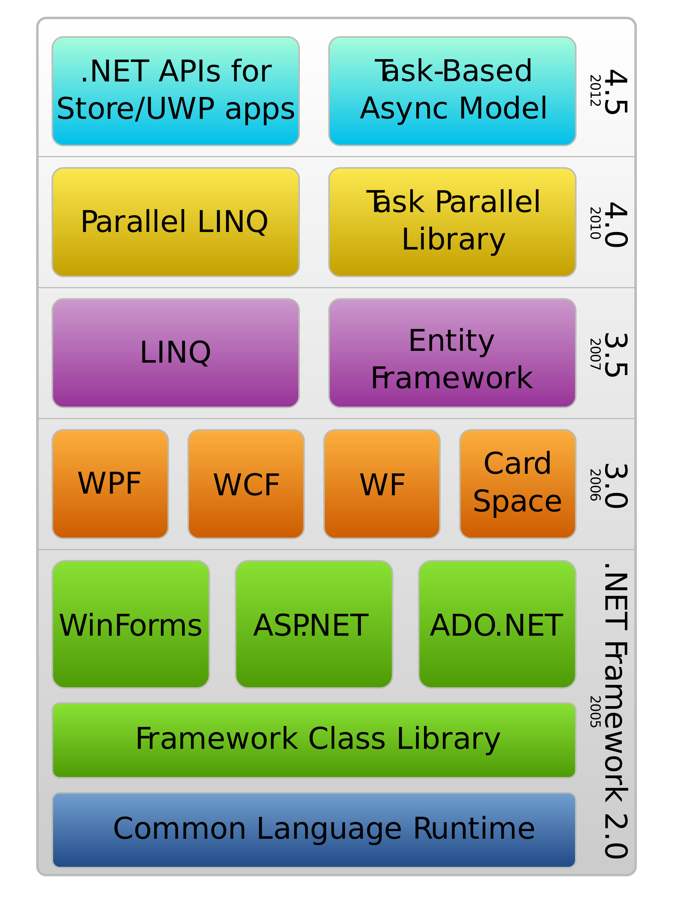

Dot Net
.NET is both a business strategy from Microsoft and its collection of programming support for what are known as
Web services,the ability to use the Web rather than your own computer for various services.
Microsoft's goal is to provide individual and business users with a seamlessly interoperable
and Web-enabled interface for applications and computing devices and to make computing activities increasingly Web browser-oriented.
The .NET platform includes servers; building-block services, such as Web-based data storage; and device software.
It also includes Passport, Microsoft's fill-in-the-form-only-once identity verification service.
The .NET platform was designed to provide:

-
The ability to make the entire range of computing devices work
together and to have user information automatically
updated and synchronized on all of them
-
Increased interactive capability for Web sites,
enabled by greater use of XML (Extensible Markup Language)
rather than HTML
-
A premium online subscription service,
that will feature customized access and delivery
of products and services to the user from a
central starting point for the management of
various applications, such as e-mail,
for example, or software, such as Office .NET
-
Centralized data storage, which will increase
efficiency and ease of access to information,
as well as synchronization of information
among users and devices
-
The ability to integrate various communications media, such as e-mail, faxes, and telephones
-
For developers, the ability to create reusable modules, which should increase
productivity and reduce the number of programming errors